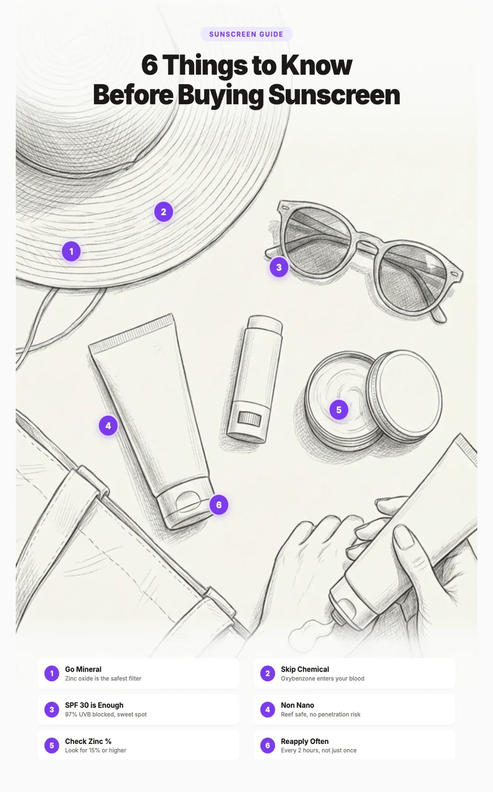

Best Mineral Sunscreens (2026): Chemical vs Mineral, Zinc vs Non Zinc, and Everything You Need to Know
The 30 Second Summary
- Skip chemical sunscreens. Oxybenzone, avobenzone, octinoxate, octocrylene, and homosalate all absorb into your bloodstream within hours.
- Choose mineral sunscreen with zinc oxide as the main active. Zinc oxide is the only single ingredient that covers the full UVA and UVB spectrum.
- SPF 30 is the sweet spot. SPF 30 blocks 97% of UVB, SPF 50 blocks 98%. Application matters more than the number.
- Top pick for most people: Pipette Mineral Sunscreen SPF 50 (20% non nano zinc, $16 to $24).
- For deeper skin tones (no white cast): Tower 28 SunnyDays Tinted, ILIA Super Serum Skin Tint, or Saie Sunvisor.
- Reapply every 2 hours. Use about a shot glass full for the body and a nickel sized dollop for the face.
Most people grab sunscreen off the shelf without a second thought. But the ingredients in your sunscreen matter just as much as wearing it in the first place. A 2019 FDA study found that chemical sunscreen ingredients absorb into the bloodstream after a single day of use, with levels increasing daily and remaining above safety thresholds a full week later.
The alternative is mineral sunscreen, which uses zinc oxide and titanium dioxide to physically block UV rays without entering your body. But not all mineral sunscreens are equal. Some brands mix in chemical filters. Others use nano particles that raise environmental concerns. This guide breaks down every distinction so you can make an informed choice.

Best Mineral Sunscreens at a Glance
Jump straight to a product or scroll for the full breakdown. All picks below are 100% mineral with zero chemical UV filters.

Pipette SPF 50
20% non nano zinc, hypoallergenic, family friendly.
View →
Thinkbaby SPF 50+
EWG 1 rating, water resistant 80 minutes, 20% zinc.
View →
Badger SPF 30
USDA Organic, non nano, recyclable metal tin option.
View →
Primally Pure SPF 30
25% zinc, only 7 ingredients, tallow base.
View →
EltaMD UV Physical SPF 41
Tinted, antioxidant rich, dermatologist favorite.
View →
Colorescience No Show SPF 50
Truly invisible, oil free, no white cast at all.
View →
Tower 28 SunnyDays SPF 30
Tinted in 5 shades, no white cast, fragrance free.
View →
Alastin HydraTint SPF 36
Tinted, TriHex Technology, post procedure safe.
View →Why Your Sunscreen Choice Matters
You apply sunscreen to large areas of skin, often multiple times a day, for months of the year. That makes it one of the highest exposure personal care products you use. Unlike a lotion that sits on your arms, sunscreen goes on your face, neck, chest, and any exposed skin, including areas where absorption rates are highest.
The FDA tested six common chemical sunscreen ingredients in 2019 and 2020, and all six were detected in the bloodstream within hours of application. Some remained elevated for weeks after participants stopped using the product. This does not necessarily mean these ingredients cause harm at those levels, but the FDA concluded that more safety data is needed before these ingredients can be classified as safe.
Meanwhile, zinc oxide and titanium dioxide are the only two sunscreen ingredients the FDA currently classifies as GRASE (Generally Recognized as Safe and Effective). They work by sitting on top of the skin and reflecting UV radiation rather than absorbing into it.
Understanding SPF: What the Numbers Actually Mean
SPF stands for Sun Protection Factor, and the number tells you how much UVB radiation the sunscreen filters out. It does not tell you how long you can stay in the sun, and higher numbers do not mean dramatically more protection.
Here is what those numbers actually mean in practice:
- SPF 15 blocks about 93% of UVB rays. This is the minimum the FDA considers protective, but it leaves 7% of UV radiation through. Fine for brief incidental exposure like running errands, but not enough for extended time outdoors.
- SPF 30 blocks about 97% of UVB rays. This is the level most dermatologists recommend for daily use. It cuts the amount of UV reaching your skin to just 3%, which is less than half of what SPF 15 allows through.
- SPF 50 blocks about 98% of UVB rays. Only 1% more than SPF 30, but it can make a meaningful difference during prolonged sun exposure, beach days, or for people with very fair skin or a history of skin cancer.
- SPF 100 blocks about 99% of UVB rays. The added benefit over SPF 50 is minimal, and higher SPF formulas often require more chemical filters to achieve those numbers, which can mean more ingredients absorbing into your skin.
Why SPF 30 Is the Sweet Spot
The jump from SPF 15 to SPF 30 is significant: you cut UV penetration from 7% to 3%, more than cutting it in half. But the jump from SPF 30 to SPF 50 only reduces penetration from 3% to 2%. After SPF 30, you hit diminishing returns fast. Each higher number adds less protection while often adding more ingredients, more cost, and a thicker feel on the skin.
This matters even more for mineral sunscreens, because reaching very high SPF numbers with zinc oxide alone requires a thicker, heavier formula that can feel chalky and leave more white cast. Many of the best mineral sunscreens land between SPF 30 and SPF 50, which is the practical sweet spot for protection, texture, and safety.
| SPF Level | UVB Blocked | UVB Getting Through | Best For |
|---|---|---|---|
| SPF 15 | 93% | Brief indoor to outdoor transitions | |
| SPF 30 | 97% | Daily use for most people (sweet spot) | |
| SPF 50 | 98% | Extended outdoor exposure, fair skin | |
| SPF 100 | 99% | Minimal added benefit, often more chemicals |
Chemical vs Mineral Sunscreen
The two types work in fundamentally different ways.
Chemical sunscreens absorb UV radiation and convert it into heat, which is then released from the skin. They typically combine two to six active ingredients like oxybenzone, avobenzone, octisalate, octocrylene, homosalate, and octinoxate. Because they absorb into the skin to work, they also absorb into the bloodstream.
Mineral sunscreens (also called physical sunscreens) sit on top of the skin and act as a physical barrier that reflects and scatters UV rays. They use only zinc oxide and/or titanium dioxide as active ingredients. They do not need to absorb into the skin to be effective.
| Feature | Chemical Sunscreen | Mineral Sunscreen |
|---|---|---|
| How it works | Absorbs UV, converts to heat | Reflects and scatters UV |
| Active ingredients | Oxybenzone, avobenzone, octinoxate, octocrylene, homosalate | Zinc oxide, titanium dioxide |
| FDA safety status | ||
| Bloodstream absorption | ||
| Time to effectiveness | 15 minutes after application | Immediate |
| Stability in sunlight | ||
| Skin irritation risk | ||
| Reef safety | ||
| White cast | ||
| Cosmetic feel |
Chemical Sunscreen Ingredients to Avoid
If you are checking labels and want to know exactly which ingredients to watch for, here are the main ones and what the research says about each.
The following chemical UV filters have been detected in the bloodstream, breast milk, and/or urine after normal sunscreen use. While more research is needed, the FDA has stated that current safety data is insufficient to classify them as safe.
Oxybenzone (Benzophenone-3)
The most studied and most concerning chemical sunscreen ingredient. A 2023 review of 254 studies found mounting evidence of endocrine disrupting properties at doses typical of sunscreen use. It has been detected in breast milk and linked to sperm cell dysfunction. Its use in sunscreens dropped from 70% of products in 2016 to only 9% in 2025, but it still appears in some formulas.
Also look for on labels: Benzophenone-3, BP-3
Avobenzone
Detected in the bloodstream at nine times the FDA's safety threshold after normal use. Its breakdown products can cause allergic reactions and may disrupt the endocrine system. Cellular studies show it can block the effects of testosterone at low doses. Avobenzone also degrades in sunlight, which is why it is usually combined with stabilizing chemicals like octocrylene.
Octinoxate (Octyl Methoxycinnamate)
Absorbs UVB radiation but provides zero UVA protection. It is absorbed systemically and has been flagged for potential endocrine disruption. Banned in Hawaii and Key West alongside oxybenzone due to coral reef damage. Still found in many drugstore sunscreens.
Octocrylene
Degrades over time into benzophenone, a suspected carcinogen and endocrine disruptor. The longer a product containing octocrylene sits on the shelf, the higher the benzophenone levels. This means older bottles can be more problematic than fresh ones.
Homosalate
Still detected above FDA safety thresholds at day 21 after the last application. It accumulates in the body faster than we can eliminate it, and has potential endocrine disrupting effects. One of the most persistent chemical sunscreen ingredients.
Popular Sunscreens That Aren't Actually Mineral
This is the section nobody tells you about. Some of the most recommended sunscreens on the internet, including by dermatologists, are quietly chemical or hybrid formulas marketed as if they were clean and mineral. If you have been buying any of these because you thought they were safe, you are not alone. Here is what is actually inside.
Many "tinted" or "skincare" sunscreens use a low percentage of zinc oxide alongside chemical UV filters. Brands often emphasize the mineral ingredient on the front of the bottle while burying the chemical actives in the ingredient list. Always flip the bottle and read the Active Ingredients box. If you see anything other than zinc oxide and titanium dioxide listed there, it is not a mineral sunscreen.
EltaMD UV Clear SPF 46
Probably the most recommended sunscreen on the entire internet, including by dermatologists who do not seem to know what is in it. UV Clear is a chemical sunscreen. Its active ingredients are zinc oxide 9% and octinoxate 7.5%. Octinoxate is one of the chemicals banned in Hawaii for reef damage and is a known endocrine disruptor with no UVA protection. Despite the EltaMD brand reputation, UV Clear should not be your daily face sunscreen if you care about clean ingredients. Use EltaMD UV Physical, UV Skin Recovery, or UV Restore instead.
La Roche Posay Anthelios (most versions)
Anthelios is heavily marketed as a "skincare grade" sunscreen and is one of the bestselling sunscreens in the world. The vast majority of Anthelios products are chemical sunscreens using avobenzone, octisalate, octocrylene, and homosalate. They have a single mineral version (Anthelios Mineral SPF 50) that uses titanium dioxide, but it provides limited UVA1 coverage on its own. If you want a mineral La Roche Posay product, look for Anthelios 50 Mineral specifically. Skip everything else in the line.
Supergoop! Unseen Sunscreen, Glowscreen, PLAY
Supergoop is a beloved clean beauty brand, and the marketing leans heavily on words like "clean" and "safe." But almost every Supergoop product is a chemical sunscreen. Unseen Sunscreen, Glowscreen, PLAY, and the original Everyday Sunscreen all use avobenzone, homosalate, octisalate, and octocrylene. Supergoop has exactly two mineral options (Mineral Mattescreen and Mattescreen) which use titanium dioxide. The brand image does not match the active ingredients in most products.
Black Girl Sunscreen and Black Girl Sunscreen Make It Matte
Both flagship Black Girl Sunscreen products are chemical sunscreens. The original uses avobenzone, homosalate, octisalate, and octocrylene. Make It Matte uses the same chemical filters. While Black Girl Sunscreen solved a real problem by formulating against white cast for deeper skin tones, the no white cast result comes from chemical filters, not zinc oxide. For a mineral alternative that actually disappears on melanated skin, see our deeper skin tones picks below.
Beauty of Joseon Relief Sun Rice Probiotics SPF 50+
The viral K beauty sunscreen everyone on TikTok recommends. It is a chemical sunscreen using ethylhexyl methoxycinnamate (octinoxate) and other chemical filters. Korean sunscreens are popular because they are cosmetically elegant and use newer chemical UV filters that are not yet FDA approved in the United States. Cosmetically excellent, but not what most people picture when they hear "clean beauty."
Zinc Oxide vs Titanium Dioxide
Both zinc oxide and titanium dioxide are mineral sunscreen ingredients. Both are FDA approved as safe and effective. But they are not identical in protection or performance.
Zinc Oxide: The Complete Protector
Zinc oxide provides the broadest UV coverage of any single sunscreen ingredient. It protects against the full UV spectrum on its own, including UVA1 (the long wave rays responsible for deep skin aging and cancer risk), UVA2, and UVB (sunburn). It also has natural anti inflammatory properties, which makes it an excellent choice for sensitive and acne prone skin.
Titanium Dioxide: The Cosmetic Performer
Titanium dioxide excels at blocking UVB rays (the ones that cause sunburn) and provides some short wave UVA2 protection. However, it has a significant gap in UVA1 coverage. This means a sunscreen with only titanium dioxide cannot deliver true broad spectrum protection. On the positive side, titanium dioxide produces less white cast than zinc oxide, which is why many brands use it in tinted products or combine it with zinc oxide for a better cosmetic finish.
| Feature | Zinc Oxide | Titanium Dioxide |
|---|---|---|
| UVB protection (sunburn) | ||
| UVA2 protection (skin damage) | ||
| UVA1 protection (aging, cancer) | ||
| Standalone broad spectrum | ||
| Anti inflammatory | No | |
| White cast | ||
| Cosmetic elegance | ||
| Safe for babies under 6 months | Not specified |
Nano vs Non Nano Zinc Oxide
This is the distinction that causes the most confusion. Nano and non nano refer to the particle size of the zinc oxide used in the sunscreen formula.
- Nano zinc oxide: Particles smaller than 100 nanometers
- Non nano zinc oxide: Particles larger than 100 nanometers
Safety on Skin
This is the most common concern, and the research is reassuring. Studies by FDA scientists and European researchers concluded that neither nano nor non nano zinc oxide nanoparticles penetrate through healthy, intact skin in any meaningful way. A real world study had volunteers apply sunscreen twice daily for five days and found less than 0.01% of zinc entering the bloodstream. Both sizes stay on the skin surface where they belong.
Reef Safety
This is where the distinction matters most. Nano zinc oxide particles are small enough to penetrate coral tissue and may cause harm at high concentrations. Non nano zinc oxide particles are too large to enter coral cells, making them the safer choice for ocean environments. Hawaii and Key West have banned oxybenzone and octinoxate specifically, and many reef safe certifications now require non nano mineral ingredients.
White Cast
Nano zinc oxide produces significantly less white cast and blends more easily into skin, which makes it popular in daily wear and cosmetically elegant formulas. Non nano zinc oxide can leave a more noticeable white tint, especially on darker skin tones, though modern formulations have improved considerably. Tinted versions solve this problem almost entirely.
What to Look for in a Mineral Sunscreen
Not every sunscreen labeled "mineral" is purely mineral. Some brands mix zinc oxide or titanium dioxide with chemical UV filters and still market the product as mineral. Here is what to check on the label.
The "Active Ingredients" section should list only zinc oxide and/or titanium dioxide. If you see oxybenzone, avobenzone, octinoxate, octocrylene, or homosalate listed as active ingredients, it is not a pure mineral sunscreen.
Higher percentages generally mean better UVA coverage. Look for at least 15% zinc oxide for adequate broad spectrum protection. Products with 20% or higher offer excellent coverage.
Brands are not required to disclose particle size, but many clean beauty brands voluntarily state "non nano" on their labels. If reef safety is important to you, look for this designation.
Good mineral sunscreens often include skin nourishing ingredients like squalane, vitamin E, hyaluronic acid, or antioxidants. Avoid formulas with synthetic fragrance, parabens, or phthalates in the inactive ingredients.
Sunscreen Formats: Cream, Stick, Spray, and Brush
Mineral sunscreens come in four main formats, and each has specific strengths. The format you choose affects how evenly the sunscreen covers your skin, how easy it is to reapply, and how well it works for different situations.
Cream and Lotion: Your Primary Protection
Cream and lotion are the gold standard for sunscreen application. They allow you to measure the right amount, spread it evenly across your skin, and achieve consistent coverage. This is the format dermatologists recommend for your primary sun protection because it is the easiest way to ensure you are applying enough product. Most of the sunscreens in our brand recommendations below are creams or lotions.
Stick: For Targeted Spots and Travel
Sunscreen sticks are compact, mess free, and excellent for applying to the face, ears, nose, around the eyes, and other small areas. They are a favorite for travel and for kids who can swipe them on independently. However, sticks are not ideal as your only sunscreen for full body coverage because it is difficult to apply a thick, even layer over large areas. Think of sticks as a complement to your cream, not a replacement.
Spray: Quick but Tricky
Mineral sunscreen sprays offer the fastest application for large areas like your back and legs. They work well for reapplication when you are already outside and need quick coverage. The catch is that sprays make it easy to underapply. You need to spray until your skin glistens, then rub it in by hand to ensure even coverage. Never spray directly at the face (spray on your hands first), and avoid inhaling the mist. The FDA has expressed concern about inhalation risks with spray sunscreens.
Brush On Powder: The Makeup Friendly Reapplication Tool
Powder mineral sunscreens come in a tube with a built in brush, making them the only practical way to reapply SPF over makeup without ruining your look. They are lightweight, absorb oil, and add a matte finish. Brands like Colorescience offer brush on powders with extremely high mineral concentrations (45% total actives). However, powder alone does not provide enough coverage to serve as your primary sunscreen. Use it as a midday reapplication tool on top of a cream or lotion base applied in the morning.
The Best Mineral Sunscreen Brands
We evaluated these brands based on active ingredients, zinc oxide percentage, particle size, price, and overall formulation quality. All products listed below use 100% mineral active ingredients with no chemical UV filters.
Pipette Mineral Sunscreen SPF 50
The best value mineral sunscreen on the market. Pipette uses 20% non nano zinc oxide and packs in skin loving ingredients like sugarcane derived squalane and wild gooseberry extract. Developed with pediatricians and dermatologists, it is hypoallergenic, fragrance free, and gentle enough for the whole family. Leaping Bunny certified cruelty free.
Active ingredient: Non nano zinc oxide 20%
Price: $16 (3 oz) to $24 (6 oz)
- Non nano zinc oxide at 20%
- SPF 50, water resistant 80 minutes
- Budget friendly for families
- Squalane keeps skin moisturized
- Yuka score 93/100
- Some white cast on darker skin tones
- Not tinted
Primally Pure Sun Cream SPF 30
A clean, tallow based sunscreen with one of the highest zinc oxide concentrations you will find. Primally Pure uses grass fed tallow as the base, which is rich in vitamins A, D, E, and K. The ingredient list is remarkably short and simple. If you want a minimal ingredient sunscreen with maximum zinc protection, this is it.
Active ingredient: Non nano zinc oxide 25%
Price: $38 (3.4 oz)
- 25% non nano zinc oxide (one of the highest)
- Only 7 ingredients total
- Tallow base nourishes skin
- Water resistant 80 minutes
- Available in unscented and lavender mint
- Thicker texture, more white cast
- SPF 30 (lower than some competitors)
- Tallow is not vegan
EltaMD UV Physical Tinted SPF 41
A dermatologist favorite that combines zinc oxide and titanium dioxide in a lightly tinted formula. EltaMD is one of the most recommended brands by dermatologists, and the UV Physical is their flagship 100% mineral option. It contains antioxidants like quercetin and linoleic acid. Note that some other EltaMD products (like UV Clear) contain chemical filters, so check the active ingredients carefully.
Active ingredients: Zinc oxide 9%, titanium dioxide 7%
Price: $48 (3 oz)
- 100% mineral with zero chemical filters
- Light tint reduces white cast
- Antioxidant rich formula
- Excellent for sensitive and post procedure skin
- Non comedogenic and fragrance free
- Lower zinc oxide percentage (9%)
- Only water resistant 40 minutes
- Uses micronized (not labeled non nano)

EltaMD UV Skin Recovery SPF 50
A 100% mineral sunscreen formulated specifically for rosacea prone, post procedure, and reactive skin. UV Skin Recovery uses 13.5% zinc oxide as the sole active and includes ceramides, niacinamide, and gluconolactone to support a damaged skin barrier. If your skin reacts to almost everything, this is the gentlest mineral sunscreen on the market.
Active ingredient: Zinc oxide 13.5%
Price: $46 (1.7 oz)
- 100% zinc oxide active
- Designed for rosacea and reactive skin
- Ceramides and niacinamide rebuild barrier
- Fragrance free, dye free, paraben free
- Non comedogenic for breakout prone skin
- Untinted, leaves a slight white cast
- Not water resistant
- Smaller tube for the price
Colorescience Total Protection No Show Mineral SPF 50
Colorescience makes exclusively mineral sunscreens, and the No Show is their best cream format option. It achieves SPF 50 protection with an invisible finish that truly lives up to the name. Oil free, fragrance free, and backed by the Skin Cancer Foundation Seal of Recommendation. Colorescience also makes the popular Brush On Shield powder (great for midday reapplication over makeup), but the No Show is the stronger choice for primary daily protection.
Active ingredient: Zinc oxide 10%
Price: $48 (1.7 oz)
- Truly invisible finish, no white cast
- Oil free and fragrance free
- Non nano zinc oxide
- Skin Cancer Foundation recommended
- EnviroScreen technology for blue light and pollution
- Lower zinc oxide percentage (10%)
- Smaller tube for the price
Alastin HydraTint Pro Mineral Sunscreen SPF 36
A premium, dermatologist office tinted mineral sunscreen that earned Shape's 2025 Best Tinted Face Sunscreen award. The tone adapting formula works across most skin tones and contains ectoin for blue light protection plus hyaluronic acid for hydration. Alastin's proprietary TriHex Technology supports collagen and elastin production while you protect your skin. Designed for post procedure skin, making it one of the gentlest options available.
Active ingredients: Titanium dioxide 8.9%, zinc oxide 3.4%
Price: $84 (3.2 oz)
- Beautiful tinted finish, no white cast
- TriHex Technology for anti aging
- Hyaluronic acid and antioxidants
- Water resistant 40 minutes
- Reef friendly, fragrance free, cruelty free
- Lower zinc oxide (3.4%), relies on titanium dioxide
- Premium price
- Limited UVA1 protection compared to zinc only formulas
Budget Picks Worth Considering
Thinkbaby Safe Sunscreen SPF 50+
Consistently one of the top rated sunscreens on the EWG database. Thinkbaby uses 20% non nano zinc oxide, is water resistant for 80 minutes, and costs a fraction of the premium brands. It earns the lowest risk rating (EWG 1) and is a favorite among parents looking for affordable, clean sun protection.
Active ingredient: Non nano zinc oxide 20%
Price: $12 to $15 (3 oz)
Badger Mineral Sunscreen SPF 30 to 50
USDA Certified Organic ingredients, manufactured with 100% solar power, and available in SPF 30, 40, and 50. Badger uses non nano zinc oxide (18.75% in SPF 30 products) and has been an EWG top rated brand for years. Certified cruelty free and reef safe.
Active ingredient: Non nano zinc oxide 18.75%+
Price: $15 to $20
Best Face Sunscreen vs Best Body Sunscreen
Most guides lump face and body sunscreen together. They should not. The job is different. A face sunscreen needs to layer under makeup, not break you out, and feel comfortable for 8 to 12 hours. A body sunscreen needs to be cheap enough to use generously across large areas, work over sweat and sand, and not require a delicate application ritual. Trying to use one product for both jobs is why most people end up disappointed with mineral sunscreen.
Best Mineral Sunscreens for the Face
For face, you want a thinner texture, a tint or invisible finish, and ingredients that play well with skincare and makeup. Lower zinc percentages (around 10 to 14%) usually mean a more cosmetically elegant feel, with the tradeoff of slightly less UVA1 coverage.
Colorescience No Show SPF 50
Best under makeup. Truly invisible, oil free.
View →
EltaMD UV Physical SPF 41
Light tint, antioxidants, derm office staple.
View →
EltaMD UV Skin Recovery
Rosacea safe, ceramides, niacinamide.
View →
Alastin HydraTint SPF 36
Tone adapting tint, TriHex collagen support.
View →Best Mineral Sunscreens for the Body (and Kids)
For body, prioritize value, water resistance, and high zinc percentage. You will use a lot more of it, so price per ounce matters. White cast is less of a concern on arms and legs than on the face, especially if you are reapplying every two hours at the beach.
Pipette SPF 50
20% non nano zinc, 6 oz family size, water resistant.
View →
Thinkbaby SPF 50+
EWG 1, 80 minute water resistance, 20% zinc.
View →
Badger SPF 30
Non nano, organic, recyclable metal tin available.
View →
Primally Pure SPF 30
25% zinc, 7 ingredients, tallow base.
View →Best Mineral Sunscreens for Deeper Skin Tones (No White Cast)
The number one complaint about mineral sunscreen is white cast, and the problem is significantly worse for medium to deep skin tones. Untinted zinc oxide can leave a chalky, ashy, or grey film that no amount of blending fully resolves. The good news is that a wave of recent mineral sunscreens have specifically formulated against this. The trick is almost always a tint that matches the skin or a tone adapting pigment that adjusts to the wearer.
Important note before the picks: most popular "no white cast" sunscreens marketed at deeper skin tones (including Black Girl Sunscreen and most viral K beauty SPFs) are chemical sunscreens, not mineral. The picks below are 100% mineral and still genuinely disappear on melanated skin.
Tower 28 SunnyDays SPF 30
Tinted in 5 shades, fragrance free, dermatologist tested.
View →
ILIA Super Serum SPF 40
Skin tint plus zinc oxide SPF, 30+ shade range.
View →
Saie Sunvisor SPF 35
Tone adapting, dewy finish, hyaluronic acid.
View →
Alastin HydraTint SPF 36
Single shade adapts across most skin tones.
View →Best Reef Safe Sunscreens for Travel
Hawaii, Key West, the U.S. Virgin Islands, Aruba, Bonaire, Mexico's Riviera Maya, and Palau have all banned chemical sunscreens at varying levels. The bans target oxybenzone and octinoxate specifically, the two ingredients most clearly linked to coral bleaching. Even where there is no formal ban, most reef ecosystems are stressed enough that any chemical sunscreen run off causes harm.
For ocean travel, you want a sunscreen that meets all three criteria: mineral active ingredients, non nano particle size, and water resistance for at least 80 minutes.
Any brand can put "reef safe" on the bottle without testing or proof. The only way to verify is to read the active ingredients yourself. If the label lists oxybenzone, octinoxate, octocrylene, or homosalate, the sunscreen is harming reefs no matter what the marketing says. Look for non nano zinc oxide as the only active ingredient.
Badger SPF 30
18.75% non nano zinc, 80 min water resistant.
View →
Thinkbaby SPF 50+
20% non nano zinc, 80 min water resistant.
View →
Pipette SPF 50
20% non nano zinc, 80 min water resistant, 6 oz tube.
View →
Primally Pure SPF 30
25% non nano zinc, 7 ingredients, 80 min water resistant.
View →Full Brand Comparison Table
| Brand and Product | SPF | Zinc Oxide % | Nano or Non Nano | Price |
|---|---|---|---|---|
| Pipette Lotion | 50 | $16 to $24 | ||
| Primally Pure Sun Cream | 30 | $38 | ||
| EltaMD UV Physical (tinted) | 41 | $48 | ||
| EltaMD UV Skin Recovery | 50 | Not specified | $46 | |
| Tower 28 SunnyDays (tinted) | 30 | $30 | ||
| ILIA Super Serum Skin Tint | 40 | Not specified | $54 | |
| Saie Sunvisor (tinted) | 35 | Not specified | $38 | |
| Colorescience No Show | 50 | $48 | ||
| Alastin HydraTint | 36 | Not specified | $84 | |
| Thinkbaby | 50+ | $12 to $15 | ||
| Badger SPF 30 | 30 | $15 to $20 |
Which Sunscreen Is Right for You
How to Apply Mineral Sunscreen (And How Much)
Mineral sunscreens work differently than chemical ones, so how you apply them matters. Even more important is the amount. Most people apply roughly 25 to 50% of what they need, which means a labeled SPF 50 actually delivers protection closer to SPF 15 in real life.
Application Tips
- Use enough. Most people use only 25% to 50% of the recommended amount. For your face alone, you need about a nickel sized dollop (two finger lengths). For your full body, you need about one ounce (a shot glass full).
- No wait time needed. Mineral sunscreen works the moment it touches your skin. You can apply it right before going outside.
- Pat, do not rub. For an even layer with less streaking, dab the sunscreen onto your skin in sections and then gently blend. Rubbing aggressively can create an uneven coat.
- Reapply every two hours. Even though mineral sunscreen is photostable (it does not break down in sunlight), it can be wiped off by sweat, towels, and touching your face. Reapply every two hours during sun exposure.
- Apply after moisturizer, before makeup. Let your moisturizer absorb fully, then apply sunscreen as the last step of skincare and before any makeup.
- Do not skip your neck and ears. These are the areas most commonly missed and most prone to sun damage.
- Use a powder mineral SPF for touch ups. Products like the Colorescience Brush On Shield make midday reapplication easy, even over makeup.
Storage and Expiration: How Long Sunscreen Actually Lasts
Sunscreen has an expiration date, and unlike most beauty products, expired sunscreen actively fails. The active ingredients break down. The formula separates. Microbial growth becomes possible. And in the case of products with octocrylene, the breakdown produces benzophenone, a suspected carcinogen, in increasing amounts the longer the bottle sits.
How Long Mineral Sunscreens Last
- Unopened, stored properly: 3 years from the manufacturing date. Look for the date stamp on the crimped end of the tube or the bottom of the bottle.
- Opened, stored properly: 12 months for most mineral sunscreens. The "12M" symbol on the back of the bottle (a small open jar icon with a number) tells you the manufacturer's recommendation.
- Exposed to heat (hot car, beach bag in direct sun): Significantly shorter. A summer of repeated heat exposure can degrade the formula in weeks. When in doubt, replace.
Signs Your Sunscreen Has Gone Bad
- Separation. If you see a watery layer at the top or the formula looks curdled, the emulsion has broken. The active ingredients are no longer evenly distributed.
- Color change. Yellowing, browning, or a darker tint than when you bought it usually means oxidation.
- Texture change. Grittiness, clumping, or a noticeably thinner or thicker consistency.
- Smell change. A sour, rancid, or off smell, especially in oil based formulas like Primally Pure.
- It is past the expiration date. Even if everything else looks fine, do not gamble on a sunburn.
Older sunscreen sitting in a plastic tube means more time for chemicals to migrate from the packaging into the product. This is especially true if the bottle has been heated repeatedly. Buy fresh each season, finish what you have, and do not stockpile sunscreen at the back of a hot bathroom cabinet for years.
What to Do After a Sunburn (Even With Mineral Sunscreen)
Even with the best sunscreen and the best application routine, sunburns happen. You forgot to reapply, you misjudged the UV index, you fell asleep on the beach. Here is how to handle a sunburn without making it worse.
What to Do Immediately
- Get out of the sun. Even small amounts of additional UV after a burn dramatically increases inflammation and DNA damage. Cover up or go inside.
- Cool the skin. A cool (not cold) shower or compresses with damp cloths for 10 to 15 minutes at a time. Avoid ice directly on burned skin.
- Hydrate. Sunburns pull fluid to the skin's surface and away from the rest of your body. Drink extra water.
- Take an anti inflammatory if appropriate. Ibuprofen within the first 24 hours can reduce swelling, redness, and pain.
- Moisturize with something gentle. Pure aloe vera (look for one that is mostly aloe, not a green dyed gel with fragrance), a thin layer of plain unscented coconut oil, or a fragrance free mineral sunscreen safe lotion.
What NOT to Put on a Sunburn
- Chemical sunscreen. Putting avobenzone, octocrylene, or oxybenzone on damaged, inflamed skin dramatically increases absorption. Switch to a fragrance free mineral sunscreen for the next week.
- Petroleum jelly or thick occlusives on fresh burns. These trap heat in the skin and can intensify the burn. Wait until the skin has cooled completely.
- Essential oils. Lavender, peppermint, eucalyptus, and citrus oils are skin irritants and can cause additional photosensitivity.
- Numbing sprays with benzocaine or lidocaine. These can trigger allergic reactions on already inflamed skin.
- Vinegar. The acidic burn from vinegar on sunburned skin is a TikTok myth that causes real chemical irritation.
- Toothpaste, butter, mayo, or other kitchen "remedies." All of these trap bacteria and heat. None of them help.
The Following Days
- Keep the area covered. Loose clothing, hats, and shade are your skin's best friends for the next 7 to 10 days. Sunburned skin is significantly more vulnerable to UV damage.
- Do not pop blisters. Blisters mean a second degree burn. Let them break on their own and keep them clean. If a large area is blistered, see a doctor.
- Expect peeling. Do not pick. The new skin underneath is even more vulnerable, and picking can cause scarring and uneven pigment.
- Use mineral sunscreen for the next 2 weeks at minimum. Healing skin needs the gentlest UV protection you can give it. Zinc oxide is also naturally anti inflammatory.
The Plastic Packaging Problem
You have carefully chosen a mineral sunscreen with clean ingredients. But then it arrives in a plastic squeeze tube. That tube sits in your hot car, bakes in your beach bag, and gets squeezed against your hands dozens of times per summer. This matters more than most people realize.
Why Sunscreen Packaging Is a Unique Risk
Sunscreen faces conditions that accelerate plastic leaching far more than most products in your bathroom cabinet:
- Heat exposure. Sunscreen lives in hot cars, beach bags, and poolside. Heat is the number one factor that causes plastic to leach chemicals into its contents. Studies show that BPA and phthalate migration from plastic increases dramatically at temperatures above 70°F (21°C), and a car dashboard can reach 150°F (65°C) or higher in summer.
- UV exposure. Sunlight degrades plastic over time, breaking polymer chains and releasing microplastics and chemical additives into the product inside. Your sunscreen tube sitting in direct sun at the beach is actively breaking down.
- Extended skin contact. Unlike food in plastic (which passes through your digestive system where some filtering occurs), sunscreen goes directly onto large areas of skin and stays there for hours. Your skin absorbs chemicals from the product and potentially from the degraded packaging.
- Repeated squeezing. Every time you squeeze a plastic tube, you create friction and pressure that can release microplastic particles into the product. Over a summer of daily use, that adds up.
Most sunscreen tubes are made from HDPE (high density polyethylene) or LDPE (low density polyethylene), which are among the safer plastics. However, caps, pumps, and spray nozzles often contain polypropylene or other plastics that may include stabilizers, plasticizers, or UV inhibitors. Spray sunscreen cans use aluminum but typically have plastic linings and nozzle components. The concern is not just the main tube material but all the plastic parts the product contacts.
How to Minimize Plastic Exposure from Sunscreen Packaging
Completely avoiding plastic packaging in sunscreen is nearly impossible right now. Even most "clean" brands use plastic tubes because the formula needs to be squeezable and water resistant. But you can reduce the risk significantly.
Packaging Options by Brand
Most mineral sunscreen brands still use plastic tubes, but some are making efforts toward better packaging. Here is what to know about the brands in this guide.
| Brand | Packaging Material | Notes |
|---|---|---|
| Badger | Offers sunscreen in recyclable metal tins. Best packaging option for minimizing plastic contact. | |
| Primally Pure | Uses recyclable HDPE tubes. Simple ingredient list means fewer chemical interactions with packaging. | |
| Pipette | Standard plastic tube. The affordable price means you can use it quickly rather than storing for months. | |
| EltaMD | Standard plastic squeeze tube with plastic cap. | |
| Colorescience | The Brush On Shield uses a metal canister. The No Show lotion uses a plastic tube. | |
| Alastin | Standard airless pump in plastic housing. | |
| Thinkbaby | Standard plastic squeeze tube. Low price makes frequent repurchasing practical. |
Sunscreen for Babies and Kids
Children's skin is thinner, more permeable, and more sensitive than adult skin. That makes the choice of sunscreen ingredients even more important for little ones. Kids also spend more time outdoors and are less likely to reapply on their own, so the formula needs to be effective and easy to use.
Babies Under 6 Months
The FDA and the American Academy of Pediatrics recommend keeping babies under 6 months out of direct sunlight entirely. Use shade, hats, and lightweight clothing as the primary protection. If sun exposure is unavoidable, zinc oxide is the only sunscreen ingredient the FDA has approved for use on babies this young. Apply a small amount to exposed areas like the face and hands. Avoid chemical sunscreens completely at this age.
Babies 6 Months and Older
Once babies reach 6 months, you can use mineral sunscreen more liberally. Stick with zinc oxide based formulas and avoid anything with fragrance, chemical UV filters, or unnecessary additives. Look for products specifically tested as hypoallergenic and pediatrician approved.
Why Mineral Is the Only Safe Choice for Kids
Children absorb chemicals through their skin at higher rates than adults because their skin barrier is still developing. A 2019 FDA study showed that chemical sunscreen ingredients reach the bloodstream within hours in adults. In children with thinner, more permeable skin, the absorption is likely even greater. Mineral sunscreens stay on the skin surface and do not enter the bloodstream, making them the clear choice for kids of any age.
Never use sunscreens containing oxybenzone, avobenzone, octinoxate, or octocrylene on children. These chemicals absorb into the bloodstream and have been linked to endocrine disruption. Children are more vulnerable to hormone disrupting chemicals because their endocrine systems are still developing. Always check the active ingredients list, even on products marketed as "kids" or "baby" sunscreen.
Best Mineral Sunscreens for Kids
The best kids' sunscreens use non nano zinc oxide, are fragrance free, and are water resistant for active outdoor play. Here are our top picks from the brands in this guide.
| Product | SPF | Zinc Oxide | Key Features | Price |
|---|---|---|---|---|
| Pipette Mineral Sunscreen | 50 | Pediatrician approved, squalane, hypoallergenic | $16 to $24 | |
| Thinkbaby | 50+ | EWG 1 rated, water resistant 80 min | $12 to $15 | |
| Badger Kids Sunscreen | 30 to 40 | USDA Organic, tangerine and vanilla scent | $15 to $18 | |
| Primally Pure Sun Cream | 30 | Only 7 ingredients, tallow based, unscented option | $38 |
- Make it a game. Let kids help apply it themselves (with your touch ups) so they build the habit early.
- Do not forget the ears, back of the neck, and tops of the feet. These are the spots most commonly missed on kids and are prone to painful burns.
- Reapply every two hours and immediately after swimming or toweling off, even with water resistant formulas.
- Use SPF 30 or higher for kids. Their skin burns faster than adult skin, and they tend to spend longer periods in direct sun.
- Pair sunscreen with sun protective clothing, hats, and sunglasses. Sunscreen is just one layer of protection. UPF rated rash guards are especially helpful for beach and pool days.
Sunscreen During Pregnancy and Breastfeeding
This is one of the most searched questions of the year, and the answer is simple: mineral sunscreen is the safe choice during pregnancy and breastfeeding. Chemical sunscreens absorb into the bloodstream and have been detected in breast milk in concentrations that match recent application. For a 9 month pregnancy and a year or more of breastfeeding, that is a lot of cumulative exposure for both you and the baby.
Why Pregnancy Changes the Math
Several things shift during pregnancy that make sunscreen choice more important than usual:
- Hormonal melasma. The "mask of pregnancy" is darker patches on the face caused by hormonal changes plus UV exposure. Mineral sunscreen with iron oxides (the pigments in tinted sunscreens) is the most effective protection against melasma because it also blocks visible light, which triggers the pigmentation.
- Increased skin sensitivity. Many women develop reactivity during pregnancy that they did not have before. Chemical sunscreens are more likely to cause irritation, rashes, or breakouts on hormonal skin.
- Endocrine sensitivity. Oxybenzone in particular has been shown to cross the placenta and has been associated with effects on fetal development in animal studies. The current evidence is not conclusive, but the precautionary principle says: when in doubt during pregnancy, choose the option without the question mark.
- Direct transfer through breast milk. Oxybenzone has been measured in human breast milk after maternal sunscreen use. Babies have far less ability to metabolize and clear these compounds than adults.
Best Sunscreens for Pregnancy and Breastfeeding
Any 100% mineral sunscreen with zinc oxide as the only or primary active is appropriate. For melasma specifically, choose a tinted formula because the iron oxides also block visible light.
EltaMD UV Physical SPF 41
Tinted, iron oxides block visible light.
View →
Pipette SPF 50
Hypoallergenic, designed for pregnancy and baby.
View →
EltaMD UV Skin Recovery
For reactive skin that develops in pregnancy.
View →
Thinkbaby SPF 50+
EWG 1 rated, safe to use everywhere on skin.
View →Frequently Asked Questions
Mineral sunscreens use zinc oxide and titanium dioxide, the only two ingredients the FDA recognizes as both safe and effective. Chemical sunscreens use ingredients like oxybenzone and avobenzone that absorb into the bloodstream and have been linked to endocrine disruption. For health and safety, mineral sunscreen is the better choice.
Zinc oxide provides the broadest UV coverage of any single sunscreen ingredient, protecting against UVA1, UVA2, and UVB rays. Titanium dioxide is stronger at blocking UVB (sunburn) rays but provides limited UVA1 protection, which means it cannot deliver full broad spectrum coverage on its own. Zinc oxide is the more complete protector.
Studies show that neither nano nor non nano zinc oxide penetrates through healthy, intact skin in any meaningful amount. A real world study found less than 0.01% of zinc entering the bloodstream after five days of twice daily application. Nano zinc oxide provides a more cosmetically elegant finish with less white cast, while non nano is preferred for reef safety.
Avoid oxybenzone (linked to endocrine disruption and found in breast milk), avobenzone (detected at nine times the FDA safety threshold in blood), octinoxate (endocrine disruptor with no UVA protection), octocrylene (degrades into benzophenone, a suspected carcinogen), and homosalate (remains above FDA safety levels for weeks after last use).
For sensitive skin, look for sunscreens with zinc oxide as the sole active ingredient, since it has natural anti inflammatory properties. Top picks include EltaMD UV Skin Recovery SPF 50 (formulated for rosacea prone skin with ceramides), Pipette Mineral Sunscreen SPF 50 (hypoallergenic with squalane), and Alastin HydraTint SPF 36 (tinted, fragrance free, designed for post procedure skin).
Yes. Non nano zinc oxide particles are too large to penetrate coral tissue, making them the safest choice for ocean and reef environments. Nano particles are small enough to potentially harm marine life at high concentrations. If you swim in the ocean, choose a non nano zinc oxide sunscreen.
No. Mineral sunscreens work immediately upon application because they physically sit on top of the skin and reflect UV rays. The 15 minute wait time only applies to chemical sunscreens, which need time to absorb into the skin before they become effective.
The white cast comes from zinc oxide and titanium dioxide particles reflecting visible light along with UV rays. Non nano particles create more white cast because they are larger. Modern formulations have significantly reduced this issue through micronized particles, tinted versions, and improved blending technology. Brands like Colorescience and EltaMD offer tinted mineral sunscreens that eliminate visible white cast.
For babies under 6 months, the FDA recommends avoiding sun exposure entirely and using shade, hats, and clothing instead. If sunscreen is necessary, zinc oxide is the only ingredient approved for babies this young. For babies 6 months and older, use a mineral sunscreen with non nano zinc oxide that is fragrance free and hypoallergenic. Pipette SPF 50 and Thinkbaby SPF 50+ are both excellent choices.
The difference is smaller than most people think. SPF 30 blocks 97% of UVB rays, while SPF 50 blocks 98%, just 1% more. SPF 30 is the sweet spot recommended by most dermatologists. What matters far more than the SPF number is applying enough product and reapplying every two hours. A well applied SPF 30 provides better protection than a thinly applied SPF 50.
Yes. Mineral sunscreens with zinc oxide are the safest choice during pregnancy and breastfeeding because they sit on top of the skin and do not enter the bloodstream. Chemical sunscreen ingredients like oxybenzone have been detected in breast milk and can cross the placenta. Top picks include EltaMD UV Physical (best for melasma due to its tint), Pipette SPF 50, Thinkbaby SPF 50+, and EltaMD UV Skin Recovery for sensitive pregnancy skin.
For deeper skin tones, choose a tinted mineral sunscreen with shade options or a tone adapting formula. The best mineral picks are Tower 28 SunnyDays SPF 30 (5 shades), ILIA Super Serum Skin Tint SPF 40 (30+ shades), Saie Sunvisor SPF 35 (tone adapting glow), and Alastin HydraTint SPF 36 (tone adapting). Avoid heavy untinted high zinc formulas on the face for deeper skin tones, as they can leave a chalky cast. Note that popular brands like Black Girl Sunscreen are chemical, not mineral.
No. Despite being one of the most recommended sunscreens by dermatologists, EltaMD UV Clear contains octinoxate 7.5%, a chemical UV filter that has been banned in Hawaii for reef damage and is a known endocrine disruptor. UV Clear is a chemical sunscreen with some zinc oxide, not a true mineral sunscreen. For purely mineral EltaMD options, choose UV Physical, UV Skin Recovery, UV Restore, or UV AOX Elements instead.
Unopened mineral sunscreen lasts about 3 years from manufacturing. Once opened, most last 12 months as indicated by the small open jar symbol on the back of the bottle. Heat exposure shortens this dramatically. Signs of degradation include separation, color change, gritty texture, or off smell. Replace any sunscreen that shows these signs or is past its expiration date, even if the formula looks fine.
For your face and neck, use a nickel sized dollop, equivalent to two finger lengths of sunscreen squeezed onto your index and middle fingers. For your full body, use about one ounce, which is a shot glass full or 6 teaspoons. Most people apply only 25 to 50% of the recommended amount, which means a labeled SPF 50 functionally drops to closer to SPF 15. Apply enough to make the SPF claim true.
Sources
Related Articles
- Microplastics in Cosmetics and Personal Care Products: What to Avoid and Safer Alternatives (2026)
Sunscreen is just one product. Learn which other personal care products contain hidden microplastics. - How to Avoid BPA and Phthalates in Everyday Products: A Room by Room Guide (2026)
Many chemical sunscreen ingredients are endocrine disruptors. Learn about other common sources of hormone disrupting chemicals. - How to Start Reducing Plastic Exposure: A Practical Priority Guide (2026)
A step by step guide to reducing your total microplastic and chemical exposure, starting with the biggest sources.